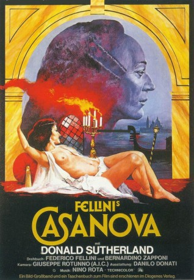
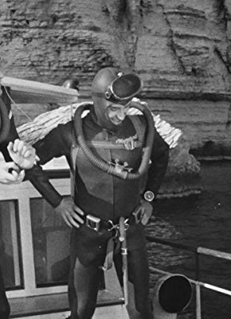
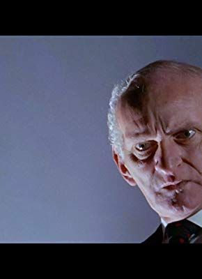
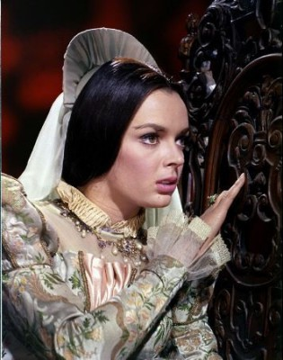
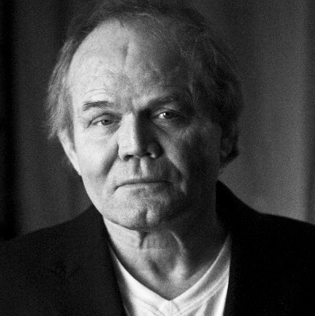

#10240 Fellinis Casanova
Alternativ: Fellini's Casanova (Englischer Titel)
Auszeichnungen: 1 Oscars gewonnen für 1 Oscars nominiert 2 BAFTA-Awards gewonnen
 
 IMDB-Wertung: 7.1 / 10
IMDB-Wertung: 7.1 / 10  Metascore: 0
Metascore: 0 
Wegen schwarzer Magie verhaftet, bricht Giacomo Casanova 1756 aus den Bleikammern Venedigs aus und flüchtet durch ganz Europa. Hier lebt er seine sexuellen Phantasien und Obsessionen aus, doch die dekadente Gesellschaft lässt ihn zum tragikomischen Helden werden: Zwischen Masken und Kulissen wird der Schürzenjäger Opfer seines selbst auferlegten sexuellen Leistungsdrucks...
Jahr: 1976
Dauer: 154 Minuten
FSK: 12
Land: Italien Studio: Arthaus FilmverleihTonspuren:
Untertitel:
Auflösung: 1080p (1920x1040) Größe: 10065 MB
Genre: Drama, Liebe, Geschichte, Biographie
Regisseur: Federico Fellini
Drehbuch: Giacomo Casanova, Federico Fellini, Bernardino Zapponi
Soundtrack: Nino Rota
Darsteller:
 Donald Sutherland als Giacomo Casanova
Donald Sutherland als Giacomo Casanova- Tina Aumont als Henriette
- Chesty Morgan als Barberina (scenes deleted)
-  Daniel Emilfork als Marquis Du Bois
 Dudley Sutton als Duke of Wuertemberg
Dudley Sutton als Duke of Wuertemberg-  John Karlsen als Lord Talou
- Reggie Nalder als Faulkircher
-  Barbara Steele als Venetian alchemist (scenes deleted)
- Diane Kurys als Madame Charpillon (uncredited)
- Elisa Mainardi als Party guest (uncredited)
- Mary Marquet als Casanova's mother (uncredited)
- Isabel Pisano als (uncredited)
 Pietro Torrisi als Brute Man (uncredited)
Pietro Torrisi als Brute Man (uncredited)-  Dan van Husen als Viderol (uncredited)
- Cicely Browne als Madame D'Urfé
- Carmen Scarpitta als Madame Charpillon
- Clara Algranti als Marcolina
- Daniela Gatti als Giselda
- Margareth Clémenti als Sister Maddalena
- Olimpia Carlisi als Isabella
- Silvana Fusacchia als Isabella's sister
- Leda Lojodice als Rosalba the Mechanical doll
- Sandra Elaine Allen als Angelina the Giantess
- Clarissa Mary Roll als Anna Maria
- Luigi Zerbinati als Pope
- Hans van de Hoek als
- Majorite Belle als Countess of Waldenstein (uncredited)
- Alessandra Belloni als Princess (uncredited)
- Mariano Brancaccio als Dancer (uncredited)
- Carli Buchanan als Aristocratic woman in Rome (uncredited)
- Mario Cencelli als Moebius (uncredited)
- Francesco De Rosa als Servant of Casanova in London (uncredited)
- Mario Gagliardo als Righetto (uncredited)
- Angelica Hansen als Hunchbacked Lady (uncredited)
- Donald Hodson als Hungarian captain (uncredited)
- Norbert Losch als Admiral at dinner table (uncredited)
- Maria Mascarielli als Dinner guest (uncredited)
- Veronica Nava als Romana (uncredited)
- Gennarino Pappagalli als Servant of Prince Dal Brando (uncredited)
- Marika Rivera als Astrodi (uncredited)
- Jean-Claude Vernè als Party guest (uncredited)
- Renato Zero als Organist (uncredited)
Datei: X:\1976\Fellinis Casanova (1976, FSK12, 1920x1040).mkv seit 25.12.2018
Festplatte: HD 1971-1979
 Es gibt insgesamt 31 Filme in der Gruppe '1976'
Es gibt insgesamt 31 Filme in der Gruppe '1976'